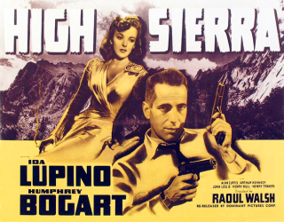
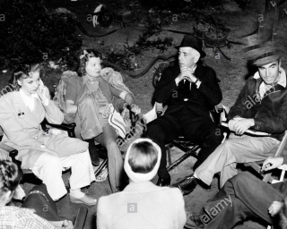
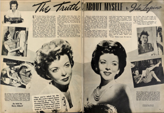
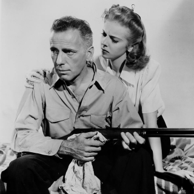
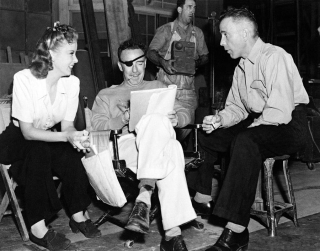
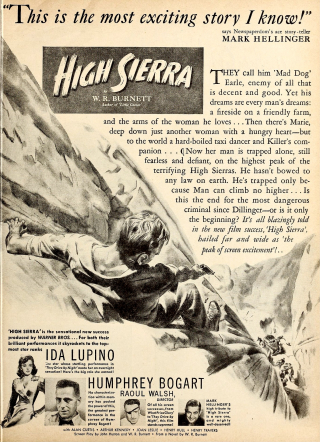
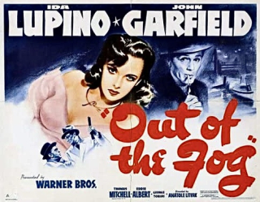

 The 1941 Warner Brothers film High Sierra was a landmark in the careers of its stars, Ida Lupino and Humphrey Bogart—marking a transition from years of frustration to full-fledged stardom for both. High Sierra provided the first starring role for Bogart in a prestige project, and it was Lupino's first lead after her attention-getting supporting performance in They Drive By Night. Various sources relate different stories of the working relationship of the two new stars during this classic movie's production. Depending on what you read, you can get the impression that the two were close to lovers or that they throughly detested each other.
The feud stories were predominant in the period right before and after the film was released. For instance, shortly before the opening, an item in a nationally-syndicated gossip column claimed that Bogart and Lupino never spoke on set except in their scenes together. Several months later, a preeminent movie magazine headlined the Lupino-Bogart relationship in an article titled "Who Hates Whom in Hollywood"—saying "The Lupino-Bogart feud is one of Hollywood's liveliest."
Modern sources, however, frequently discount any feud based on observations from others working on the set. Film historian Eddie Muller claimed in a 2019 segment on TCM that the rumors Lupino and Bogart did not get along during High Sierra were "nonsense". The thoroughly-researched biography of Bogart by Ann Sperber and Eric Lax reports that "no one connected with High Sierra saw anything to suggest animosity between Bogart and Lupino; all the evidence is to the contrary."
Irving Rapper, dialogue director on High Sierra, provided key evidence used by Sperber-Lax and others to counteract the alleged feud. In a later interview, Rapper stated that "Bogie was crazy about Ida", and that "Ida was in love with [Bogart]". Lupino's and Bogart's respective spouses, actor Louis Hayward and actress Mayo Methot, visited the set frequently, and according to Rapper, "[Lupino] was evidently too charming. Mayo Methot was jealous."
Lupino was always effusive in her remembrances of Bogart, who died in 1957. For instance, she contributed an endearing tribute, including a story from their work together on High Sierra, as part of the 1967 television documentary Bogart. Lupino said:
I find it very hard to cry in front of a whole crew. Especially when they'd say, 'Quiet, everybody, quiet!' I'd freeze up. I couldn't do anything.
So, Bogey sensed this. This was the side of this man—this tough guy—that, you know, his friends knew. But I didn't know.
He took me to one side and looked at our director, Raoul Walsh, and gave him a sign, and he said, 'Listen, doll. If you can't cry, just remember one thing—I'm going to take the picture away from you.' Oh, I started to laugh. And I said, 'Now listen, Bogey, I can't cry. Don't break me up.' He said, 'All right, you're relaxed.' And I said, 'Yes, I am, but now I can't cry.' He said, 'All right, next step. Come on.' He walked me further away.
And he said, 'Just try to think of one thing. If you can't relate it to me or the character—my character, right now—go back to your childhood. Can you remember when you had to say goodbye to somebody—somebody you loved—and you thought you weren't going to see them again?' And I said, 'yes'.
And he said, 'Well think of that, baby, that of it!'
And there were tears in his eyes. And before I knew it, I was crying!
In a separate interview, Lupino said about Bogart that "It didn't turn out for us to be lovers. But we did care about each other. Being with him was absolutely heaven, and I guess he didn't think I was too bad."
In contrast to the claim in Sperber-Lax that "all the evidence [about a feud] is to the contrary", several notable pieces suggest the animosity rumors had some truth. First, shortly after the filming of High Sierra, Bogart repeatedly expressed the belief that Lupino had used her influence to prevent him from being cast with her again in Out of the Fog. Second, Sperber-Lax recount an interview Bogart gave three years later where he "allegedly acknowledged giving Lupino quite a verbal battering" during High Sierra.
Finally, a smoking gun came five years after the events. In 1945, Lupino herself wrote that she and Bogart did not speak for two years after High Sierra. This confession came in an article published in the November 1945 issue of Screenland magazine titled The Truth About Myself, by Ida Lupino. In the article, Lupino debunks numerous inaccuracies that had been related about her over the years. But with the High Sierra stories, she does the opposite:
According to gossip, I have been involved in more feuds than any other Hollywood actress. Actually, I have had only one real feud.
There are three kinds of Hollywood feuds—the real kind, the publicity type which is used to promote a picture, and the kind which isn't a feud at all but is just a slight misunderstanding which is blown up out of all proportion.
I once had a real feud with Humphrey Bogart, when we were working on 'High Sierra'. I have a way of kidding with a straight face; so has Bogey. Neither of us recognized the trait in the other. Each of us thought the other was being nasty, and we were both offended. For a long time we would pass each other with our noses up in the air. For two years we didn't speak. Then one day I was working on a picture with Paul Henreid and we went over to the set where Bogey was working to wish his director, Curtis Bernhardt, good luck on his new picture. Bogey had to look right at me and I at him. We both began to laugh—and that broke the ice. Now we are very good friends.
Seeing the contrasting stories from different sources over the years, I found it interesting to investigate how the Lupino-Bogart relationship was described in the press in real time.
High Sierra production
Ida Lupino was cast as a lead in High Sierra in early July, 1940. This came shortly after her excellent performance in They Drive By Night, her first film at Warner Brothers and the role that propelled her to major stardom. Paul Muni was slated for the male lead in High Sierra at the time. Within a week, though, Muni and Warner Brothers had broken up. The studio needed a new star—and Humphrey Bogart, who had been campaigning for the role, was the logical choice.
Lupino and Bogart had first met during the filming of They Drive By Night a couple months earlier. But they did not share many scenes together. So, according to Lupino, she "didn't get to know [Bogart] at the time."
Production on High Sierra began on August 5. The crew, led by director Raoul Walsh, initially travelled to the Arrowhead Springs resort in the mountains outside Los Angeles. Two weeks later they returned to Hollywood for studio setups. In mid-September, the company went on another location trip—this time to Lone Pine and the Sierra Nevada mountains. On September 19, they all returned to Hollywood, wrapping filming a week later.
In the initial press reports, there is no evidence of any problems between the film's two stars. A reporter for Photoplay magazine visited the set and found "real excitement":
Here was the picture Paul Muni dropped his Warners contract rather than make. Here was Bogey, as all Hollywood calls him, getting his first real starring role. And here was Miss Lupino, "the new sensation", as they told us, forgetting all about Ida's seven discouraging years already spent in flicker town.
In an August 28 column, Sheilah Graham related that while she was interviewing Ida Lupino on set, "Humphrey Bogart joins us. He is smiling and happy." The two stars good-naturedly discussed the film together. Ironically, in this interview, Lupino was compelled to deny rumors that she and Ann Sheridan were feuding after their work in They Drive By Night: "It's utter nonsense. Ann Sheridan and I have been friends ever since she came here seven years ago. Ann's first picture was with me. We lived together for a year. I don't blame her for not liking her part in 'They Drive By Night,' but she's too real a person to let it upset our friendship."
One alleged feud was shot down; but another soon was born. The next day Jimmie Fidler wrote that Lupino and Bogart "are stepping on each other's toes". He included no details. This is the only published indication of any discord between Lupino and Bogart that I have been able to find that was reported during production.
A couple weeks later, during the Lone Pine location shoot in mid-September, something more significant may have happened to affect Lupino and Bogart's relationship. On September 29, a few days after filming completed, Louella Parsons wrote:
I'm surprised to hear that there was plenty of temperament on the location of 'High Sierra', with most of the flare-ups between Ida Lupino and Humphrey Bogart. Ida is such a level-headed little person and I've known Humphrey so long it is difficult to believe they had trouble to the point of the little Lupino threatening to walk out. It's true that big success has come to both of them suddenly with the past year—but they're both real troupers who have never begrudged honors before. Well, location trips are tough on everybody's nerves so maybe that was the reason.
A few months later, Dorothy Kilgallen wrote that the "tiff" between Bogart and Lupino had started when the two and their spouses "shared a cottage... and stopped talking!"
Speculating on what may have precipitated a conflict, the Sperber-Lax book points out that, on September 18—the day before the company left Lone Pine—Warner Brothers executive producer Hal Wallis had decided to give Lupino top billing over Bogart. The next two days, studio records list Lupino as unable to work due to a rash or illness. Sperber-Lax then write:
In the absence of records no one knows whether Bogart took out his disappointment on Lupino or even if they had a direct confrontation. He knew well enough that she had nothing to do with the decision, and she later insisted that "he never said a word about" the [billing] change.
Sperber-Lax also report that Lupino thought Bogart was unhappy "toward the finish".
Some in the press tried to discount the discord rumors, even at the time. A photo taken in August at Arrowhead Springs resort, in the early stages of filming, was captioned in Screenland magazine's December 1940 issue: "This pleasant picture of Ida Lupino and Humphrey Bogart, left, with Irving Rapper, dialogue director, while on location for 'High Sierra', makes us doubt the rumors that Ida and Bogey were tiffing because one was trying to steal scenes from the other."
Immediately after High Sierra
Whatever friction between Lupino and Bogart that developed on the set of High Sierra had fallout a few months later with the casting of Out of the Fog (which had the working title of The Gentle People).
Warners, sensing they had a hit on their hands with High Sierra, considered re-teaming its two stars. In the last few weeks of 1940, while Lupino was working on The Sea Wolf with Edward G. Robinson and John Garfield, press items appeared suggesting that she and Bogart would do a picture titled Highway 99; other items paired them in The Gentle People. In December, Bogart was sent east to do a personal appearance tour with his wife in preparation for the opening of High Sierra a month later.
Bogart had not been notified of any new role. While on his New York trip, he sent a cable to Warners producer Henry Blanke asking if the "rumor" about The Gentle People was true, adding that it "seems like a good idea". Apparently the casting rumor was not true—at least not yet. James Cagney and George Raft were the studio's top choices, though both soon turned it down. Bogart continued his campaign for the role.
With advance publicity for the late January opening of High Sierra kicking into gear, new press items relating to the rumored Bogart-Lupino discord appeared. On December 27, Jimmie Fidler wrote that Bogart, in his appearances in New York, "could hold audiences spellbound with reports of how 'beautifully' he and Ida Lupino got along during the filming of that picture."
Then on December 31, Paul Harrison published this sensationalized item: "Except on one occasion—when she told him plenty—Ida Lupino and Humphrey Bogart spoke to each other only in the dialog on 'High Sierra'."
After all the other stories from the set of High Sierra, this—coming several months after filming completed—is not believable. It is perhaps a press agent's idea of how to get attention for the new movie by building on the earlier rumors. This item was re-printed numerous times in the lead up to the movie's opening a few weeks later.
Casting controversy
The Gentle People, released under the title Out of the Fog, was a high-profile Warner Brothers production based on a play by Irwin Shaw. Lupino was considered for a leading role as early as December, while, as we saw, Bogart was rumored for the male lead—an unsympathetic racketeer named Goff.
While Cagney and Raft had turned the Goff role down, Bogart was eager for it; and so was fellow Warner contractee John Garfield. In the latter half of January, while Bogart was pushing for a meeting with Jack Warner to discuss the role, several Hollywood columnists were printing that Lupino's husband, Louis Hayward, was a candidate as well—despite Hayward's not having a contract with Warners. One columnist even claimed that Hayward was being tested and that Lupino did the test with him. (Lupino and Hayward were definitely trying to find a vehicle to work together in at the time. Very soon, the couple would be cast together in Ladies in Retirement at Columbia, which was filmed in the early summer of 1941.)
As of January 31, 1941, internal Warners documents had Bogart penciled in for the Goff role in The Gentle People. But in the press and in the internal memos of the Warner executives, John Garfield had emerged as the most likely candidate. Sheilah Graham wrote that Garfield "probably" had the role; while behind the scenes, producer Blanke told Jack Warner that casting Garfield would eliminate "the problem of convincing Lupino to play with Bogart". On February 4, Jack Warner cabled executive producer Hal Wallis that "Lupino refuses to play in picture with Bogart." On February 7, Garfield's casting as Goff became official. Bogart was soon assigned to Manpower with Marlene Dietrich and George Raft.
The internal Warners documents claiming Lupino did not want to work with Bogart were devoid of the usual detail, according to Sperber-Lax. They suggest that it is possible "the studio invented the slight as a means of not casting Bogart and shifting the onus onto Lupino". Lupino's memories support this interpretation. In an interview decades later, she vociferously denied that she refused to work with Bogart in Out of the Fog, saying, "Warners was absolutely lying, completely untrue, completely untrue." [Ida Lupino: Beyond the Camera]. At the time, though, Bogart believed that Lupino had pushed him out of the film.
Suspension
Bogart's unhappiness with losing the Goff role was compounded when George Raft asked for him to be removed from Manpower. As Bogart saw it, Ida Lupino and George Raft were casting movies at Warners now—at his expense. On top of that, he strongly disliked the next script Warners gave him—Bad Men of Missouri. In early April, he refused that role and the studio suspended him.
During the suspension, Bogart's displeasure made the papers. On April 13, Whitney Bolton, presenting himself as a personal friend of Bogart's, wrote an opinion column in the Philadelphia Inquirer describing hostility between Lupino and Bogart during High Sierra—"icy goings-on"—although "they never actually had words". Then he repeats the story that Lupino did not wish to work with Bogart again and lambasts her repeatedly (and Raft as well). A sample: "The best that can be deduced from all those triple plays is that Miss Lupino and Raft skitter away from having an actor in their pictures. It would be possible for Bogart to get in there and pitch and steal 'Gentle People' from Lupino. It would be even less trouble for him to steal it from George."
This is a long, mean-spirited essay and hard to take literally—though coming from a self-identified friend of Bogart, it is evidence of significant bad feelings. Since this made it into print, what kind of talk was going on in private? The two years that Lupino mentioned of her and Bogart not speaking become understandable.
Epilogue
A month or so later, Bogart's professional situation turned around drastically when Warners put him back on the payroll and cast him as the lead in The Maltese Falcon. On the set of that legendary film in June, Bogart repeated the idea that Lupino had kept him out of the earlier film: "I was up for the John Garfield part in 'Out of the Fog', but Ida Lupino didn't want me." The bad feelings remained.
Within a few years of High Sierra, as Lupino recounted in her 1945 article, she and Bogart had transformed from cool antagonists into solid friends. An example comes from late 1944: Hedda Hopper tells of Bogart, with Lauren Bacall accompanying him during the early stages of their highly-publicized romance, taking time off from The Big Sleep to visit Ida Lupino on the set of Pillow to Post. Numerous other anecdotes in various publications show Lupino and Bogart socializing during the mid and late 1940s. And, of course, Lupino's own words in 1945 relate that they were "very good friends". Finally, there are Lupino's remembrances of Bogart many years later:
"When he liked you and he believed in you, he was the most loyal, wonderful guy in the whole wide world."
Sources
- Bogart by A. M. Sperber and Eric Lax, HarperCollins Publishers, 1997
- Bogart, television movie, directed by Marshall Flaum, 1967
- Newspapers.com archives for United States newspapers
- Media History Digital Library archives of Hollywood fan magazines and trade papers
- Ida Lupino: Beyond the Camera by Mary Ann Anderson, BearManor Media, 2018
- Ida Lupino: A Biography by William Donati, University Press of Kentucky, 2000
- Noir Alley, outro to High Sierra by Eddie Muller, Turner Classic Movies, March 17, 2019
- He Ran All the Way: The Life of John Garfield by John Nott, Limelight Editions, 2003
Notes
All information derived from internal Warner Brothers documents comes from the research presented in the Sperber-Lax biography of Bogart.

What a great article! Thanks!
Posted by: Jeff greenberg | Sep 18, 2023 at 09:44 PM
Jeff, thanks for reading!
Posted by: P.M.Bryant | Sep 26, 2023 at 06:30 PM